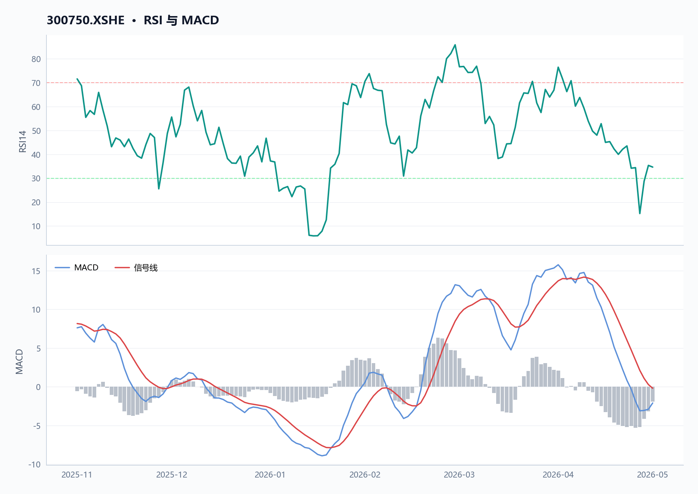
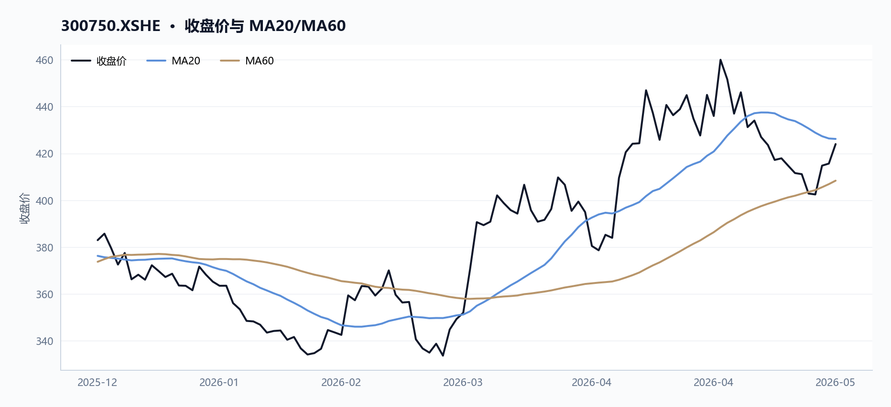
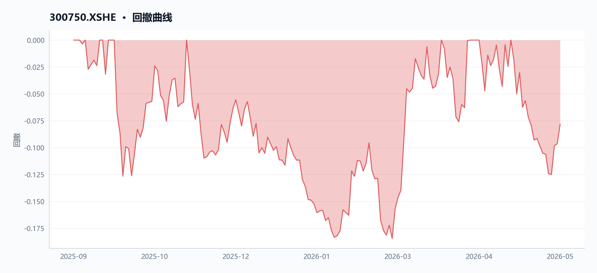
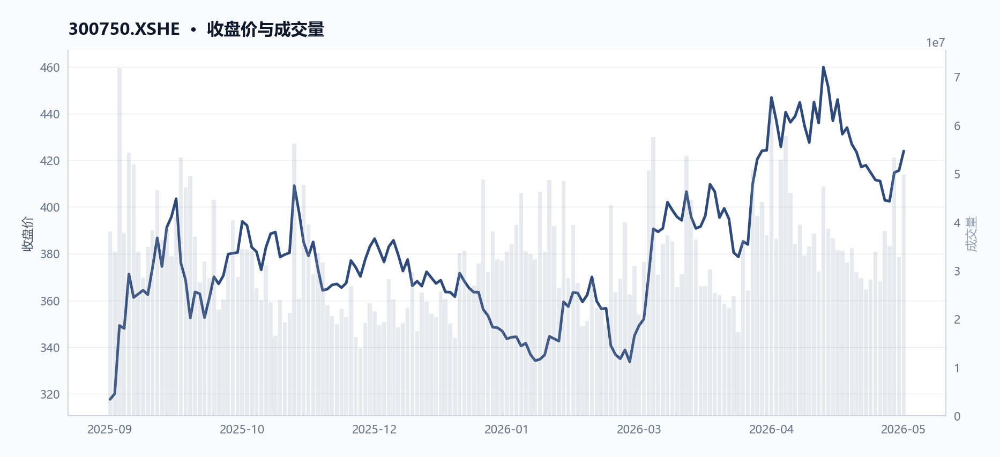
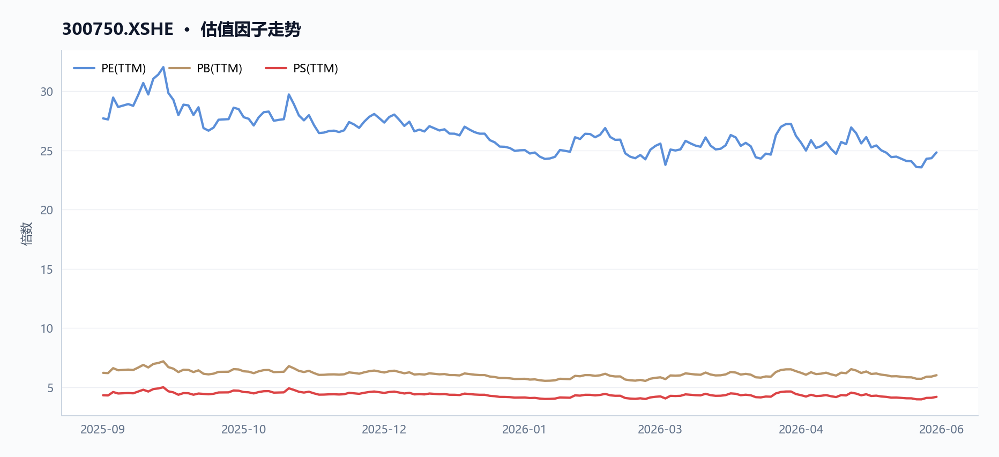
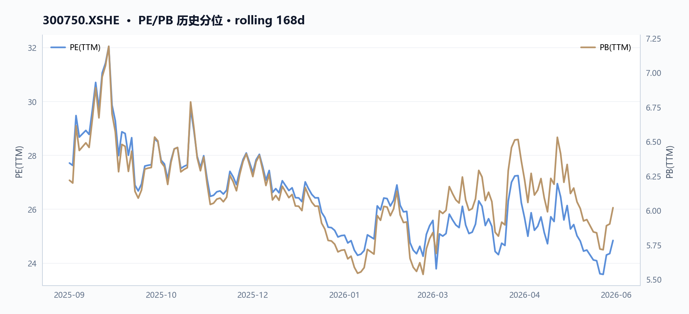
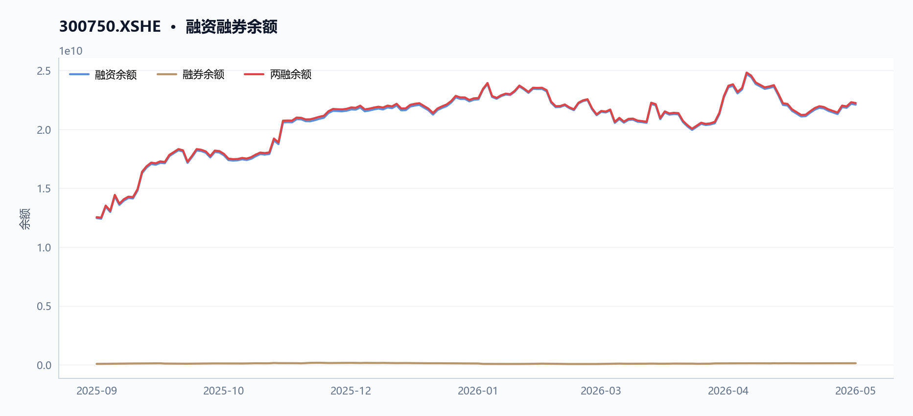
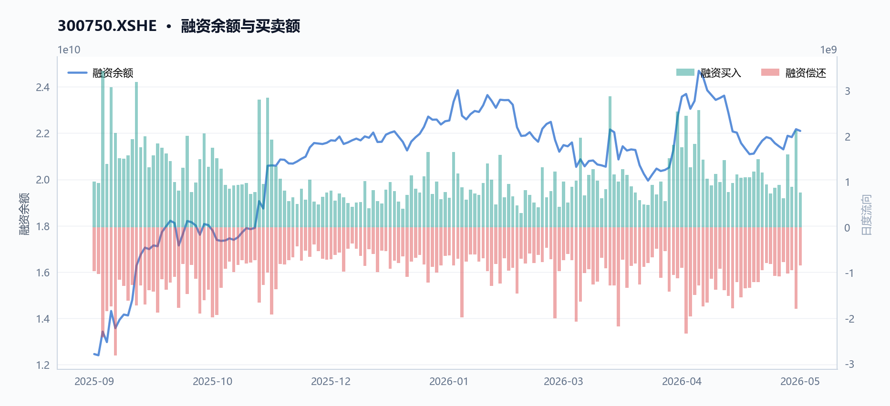
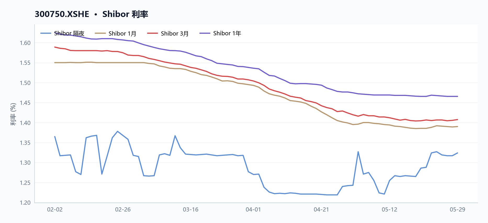
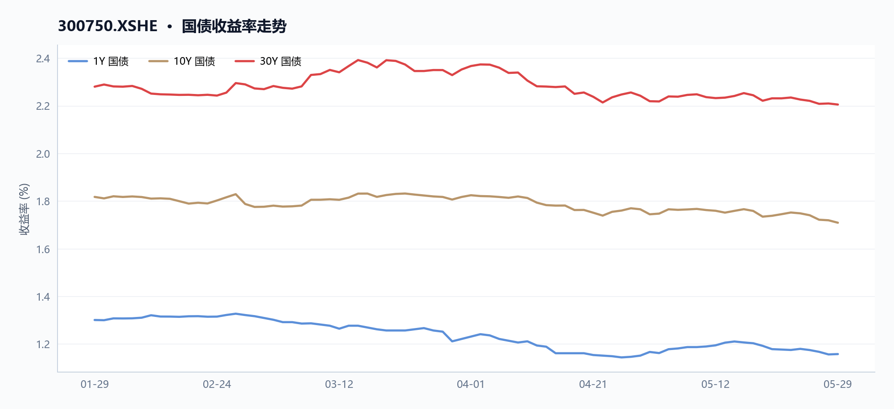

300750 宁德时代 多智能体研究报告
执行摘要
宁德时代（300750）当前核心矛盾在于短期技术面承压与中长期基本面强劲并存：股价报424元，近20日下跌4.72%，RSI14仅34.67进入偏弱区间，但近60日仍累计上涨25.16%；估值方面，TTM市盈率24.84倍、市净率6.02倍，2025年归母净利润同比增长45.72%，毛利率26.21%，净利率18.09%；两融余额约222.31亿元，近一周融资买入额波动较大，显示多空分歧。
核心指标速览
| 指标 | 数值 |
|---|---|
| 中信一级行业 | 27 |
| 最新收盘价 | 424 |
| MA20 | 426.21 |
| MA60 | 408.3875 |
| 20 日收益率 | -4.72% |
| 60 日收益率 | 25.16% |
| RSI14 | 34.665 |
| 20 日均量 | 3540.32 万 |
| PE(TTM) | 24.8383 |
| PB(TTM) | 6.0194 |
| PS(TTM) | 4.1904 |
| 股息率(TTM) | 1.88% |
| 总市值 | 19616.40 亿 |
| 融资余额 | 220.96 亿 |
| 融资买入额 | 7.69 亿 |
量价与技术面
核心结论
截至2026-05-29，宁德时代（300750.XSHE）收盘价424.0元，短期承压于MA20下方，RSI 34.67进入偏弱区域，但近5日量价齐升显示反弹动能。
图 · RSI 与 MACD

RSI 位于弱势区间；MACD 位于信号线下方，动能偏弱。
表 · 技术指标快照
| 维度 | 最新收盘价 | MA20 | MA60 | 20 日收益率 | 60 日收益率 | RSI14 | 20 日均量 |
|---|---|---|---|---|---|---|---|
| 最新 | 424 | 426.21 | 408.3875 | -4.72% | 25.16% | 34.665 | 3540.32 万 |
趋势概览
图 · 收盘价与 MA20/MA60

价格位于短均线下、长均线上，呈现震荡整理。
截至2026-05-29，宁德时代（300750.XSHE）收盘价424.0元，低于20日均线（426.21元）0.52%，但高于60日均线（408.39元）3.82%。近20日（2026-04-29至2026-05-29）收益率为-4.72%，近60日（2026-03-02至2026-05-29）收益率为+25.16%，显示中期上行趋势遭遇短期回调压力。14日RSI为34.67，处于偏弱区间（通常低于30为超卖），表明近期空方力量占优，但尚未进入极端超卖区域。
| 指标 | 数值 | 日期 |
|---|---|---|
| 最新收盘价 | 424.0元 | 2026-05-29 |
| MA20 | 426.21元 | 2026-05-29 |
| MA60 | 408.39元 | 2026-05-29 |
| 近20日收益率 | -4.72% | 2026-04-29至2026-05-29 |
| 近60日收益率 | +25.16% | 2026-03-02至2026-05-29 |
| RSI(14) | 34.67 | 2026-05-29 |
如图1（price_volume图）所示，股价在2026-05-06触及近20日高点465.88元后持续回落，至2026-05-25低点402.88元，累计跌幅达13.52%，随后出现反弹。
图 · 回撤曲线

回撤经历加深后有所修复。
近期异动
近5个交易日（2026-05-25至2026-05-29），宁德时代（300750.XSHE）股价从402.88元反弹至424.0元，涨幅5.24%，成交量从3819.77万股增至4981.19万股，增幅30.41%。其中2026-05-27单日成交量达5337.29万股，为近10个交易日最高，较20日均量（3540.32万股）高出50.8%，当日股价从402.5元上涨至414.8元，涨幅3.06%，显示资金在低位积极介入。
如图2（moving_averages图）所示，股价在2026-05-27重新站上MA20，结束了此前连续5个交易日（2026-05-20至2026-05-26）位于MA20下方的局面。
| 交易日 | 收盘价(元) | 涨跌幅(%) | 成交量(股) | 较20日均量(%) |
|---|---|---|---|---|
| 2026-05-25 | 402.88 | -2.01 | 38,197,710 | +7.9 |
| 2026-05-26 | 402.50 | -0.09 | 35,062,703 | -1.0 |
| 2026-05-27 | 414.80 | +3.06 | 53,372,888 | +50.8 |
| 2026-05-28 | 415.68 | +0.21 | 32,777,149 | -7.4 |
| 2026-05-29 | 424.00 | +2.00 | 49,811,891 | +40.7 |
量价关系
图 · 收盘价与成交量

价格整体上行，成交量先抑后扬。
近20日（2026-04-29至2026-05-29），宁德时代（300750.XSHE）股价从445.0元下跌至424.0元，跌幅4.72%，同期成交量从3763.36万股增至4981.19万股，增幅32.36%，呈现价跌量增态势，表明下跌过程中抛压有所释放。然而，近5日（2026-05-25至2026-05-29）股价反弹5.24%，成交量同步放大30.41%，显示反弹获得量能支撑，短期多空力量正在转换。
结合MD&A中提及的“2025年存货增速58.0%远超收入增速17.0%”这一营运效率信号，存货积压可能对短期资金面形成压力，但股价在低位放量反弹，或反映市场对长期需求（如MD&A中提到的全球新能源车销量增长21.5%）的预期。
-
数据局限
技术指标基于历史价格和成交量，不预示未来走势；RSI等震荡指标在强趋势行情中可能长期处于超买/超卖区域；成交量数据受除权除息、大宗交易等因素影响，单日异常放量可能不代表趋势性资金流入。
基本面与估值
核心结论
截至2026-05-29，宁德时代TTM PE 24.8倍，归母净利润增速42.3%，盈利增长与估值匹配，但存货增速58.0%远超收入增速17.0%，营运效率承压。
盈利与成长
表 · 最新盈利质量因子
| 维度 | 毛利率(TTM) | 净利率(TTM) | ROE(TTM) |
|---|---|---|---|
| 最新 | 26.21% | 18.09% | — |
2025年宁德时代实现营收4237亿元，同比增长17.0%；归母净利润722亿元，同比增长42.3%，增速显著高于收入。MD&A指出“实现锂离子电池销量661GWh，同比增长39.16%”，销量增长是利润提升的核心驱动力。TTM口径下，归母净利润增速45.7%，营业利润增速45.2%，均保持高增长。毛利率TTM为26.2%，较2025-09-11的25.2%提升1.0个百分点；净利率TTM为18.1%，较2025-09-11的16.4%提升1.7个百分点，盈利能力持续改善。
| 指标 | 2023 | 2024 | 2025 |
|---|---|---|---|
| 营收（亿元） | 4009 | 3620 | 4237 |
| 归母净利润（亿元） | 441 | 507 | 722 |
| 营业利润（亿元） | 537 | 641 | 895 |
| 营收同比增速 | - | -9.7% | 17.0% |
| 归母净利润同比增速 | - | 15.0% | 42.3% |
现金流与勾稽
2025年经营现金流1332亿元，净现比（经营现金流/归母净利润）为1.73，收现比（经营现金流/营收）为1.13，利润现金转化质量高。MD&A解释“主要是销售规模增长，销售回款增加”。自由现金流（经营现金流-资本支出，数据未提供）连续为正，但存货增速58.0%远超收入增速17.0%，MD&A提及“业务规模扩大，存货相应增加”，营运资本占用加重。应收账款周转率TTM为6.58次，较2025-09-11的5.87次提升12.1%，回款效率有所改善。
| 现金流指标 | 2023 | 2024 | 2025 |
|---|---|---|---|
| 经营现金流（亿元） | 928 | 970 | 1332 |
| 净现比 | 2.10 | 1.91 | 1.73 |
| 收现比 | 0.23 | 0.27 | 0.31 |
估值水平
图 · 估值因子走势

多条曲线整体向上，指标同步改善。
图 · PE/PB 历史分位

截至2026-05-29，TTM PE为24.8倍，PB为6.0倍，PS为4.2倍，股息率1.9%。与2025-09-11相比，PE从25.2倍微降至24.8倍，PB从5.7倍升至6.0倍，PS从3.9倍升至4.2倍，估值水平随股价上涨有所抬升。总市值从2025-09-11的14708亿元增至2026-05-29的19616亿元，增幅33.4%。
表 · 近期分红记录
| 除权除息日 | 每股税前分红(元) |
|---|---|
| 2025-01-24T00:00:00 | 12.3 |
| 2025-04-22T00:00:00 | 45.53 |
| 2025-08-20T00:00:00 | 10.07 |
| 2026-04-22T00:00:00 | 21.78 |
| 2026-04-22T00:00:00 | 47.79 |
| 估值指标 | 2025-09-11 | 2026-05-29 |
|---|---|---|
| PE (TTM) | 25.2 | 24.8 |
| PB (TTM) | 5.7 | 6.0 |
| PS (TTM) | 3.9 | 4.2 |
| 股息率 (TTM) | 2.1% | 1.9% |
数据局限 - 自由现金流计算所需的资本支出数据未提供。 - 存货周转率、ROE等指标未直接提供，无法精确计算。 - 分业务板块的营收与利润数据未提供，无法评估各业务贡献。
资金与交易结构
核心结论
截至2026-05-29，宁德时代区间成交活跃度显著提升，融资余额从125亿增至221亿，但近20日股价回调4.7%，资金呈现高位博弈特征。
图 · 融资融券余额

融资余额曲线整体上行。
表 · 两融区间变动
| 指标 | 数值 |
|---|---|
| 区间起始 | 2025-09-11 |
| 区间结束 | 2026-05-28 |
| 融资余额（期初） | 124.61 亿 |
| 融资余额（期末） | 220.96 亿 |
| 融资余额变动 | 96.35 亿 |
| 变动幅度 | 77.32% |
| 融券余额（期初） | 0.79 亿 |
| 融券余额（期末） | 1.35 亿 |
| 融券余额变动 | 0.56 亿 |
| 融券变动幅度 | 71.36% |
| 融资买入峰值 | 34.41 亿（2025-09-15） |
成交与活跃度
表 · 成交活跃度
| 指标 | 数值 |
|---|---|
| 20 日均量 | 3540.32 万 |
| 近12日日均成交额 | 145.49 亿 |
| 近12日最高成交额 | 223.73 亿（2026-05-27） |
| 近12日最低成交额 | 108.05 亿（2026-05-19） |
| 近12日换手率区间 | 61.28% ~ 1.25% |
| 主力资金流向 | 数据缺失 |
区间内（2025-09-11至2026-05-29）成交活跃度显著提升。最新20日均成交量（avg_volume_20d）为35,403,218股，而区间最后5日（2026-05-25至2026-05-29）日均成交量约41,846,688股，较区间初期明显放大。区间价格高点出现在2026-05-06（收盘价460.0元），低点出现在2025-09-11（收盘价317.57元）。近20日（2026-04-29至2026-05-29）股价下跌4.7%，但成交量从37,633,560股增至49,811,891股，量价背离，显示多空分歧加大。
| 时间窗口 | 起始日期 | 结束日期 | 收盘价变化 | 成交量变化 |
|---|---|---|---|---|
| 最后5日 | 2026-05-25 | 2026-05-29 | +5.24% | +30.41% |
| 最后20日 | 2026-04-29 | 2026-05-29 | -4.72% | +32.36% |
融资融券
图 · 融资余额与买卖额

表 · 融资融券快照
| 统计日期 | 融资余额 | 融券余额 | 两融余额 | 融资买入额 | 融资偿还额 | 融券余量 |
|---|---|---|---|---|---|---|
| 2026-05-28 | 220.96 亿 | 1.35 亿 | 222.31 亿 | 7.69 亿 | 8.42 亿 | 32.54 万 |
区间内（2025-09-11至2026-05-28）融资余额从12,461,315,072元增长至22,096,051,787元，增幅约77.3%，显示杠杆资金持续流入。期间单日最大融资买入额出现在2025-09-15，为3,440,630,726元。融券余额数据缺失（short_selling_balance_end为null），无法评估融券端变化。
股东与股本
表 · 股本结构快照
| 项目 | 数值 |
|---|---|
| 统计日期 | 2026-05-29 |
| 总股本 | 46.27 亿 |
| 流通 A 股 | 42.57 亿 |
| 自由流通股本 | 26.89 亿 |
| 自由流通占比 | 58.1% |
| 非自由流通占比 | 41.9% |
截至2026-05-29，公司总市值约1.96万亿元（market_cap: 1,961,639,922,848元）。区间内（2025-09-11至2026-05-29）市值从约1.47万亿元增长至1.96万亿元，增幅约33.4%。股本结构及股东户数等数据未提供。
分红与资金成本
最新TTM股息率（dividend_yield_ttm）为1.88%。资产负债率（debt_to_asset_ratio）为62.32%，流动比率（current_ratio）为1.60，速动比率（quick_ratio）为1.34。结合MD&A，公司于2025年通过H股IPO募集资金约410亿港元，用于匈牙利项目建设及营运资金，这有助于优化资本结构，但资产负债率仍处于偏高区间。
- 数据局限：未提供融券余额、股东户数、股本结构、具体分红金额及历史股息率等数据，无法进行更深入的分析。
capital_flow数据缺失，无法评估主力资金流向。
宏观利率背景
核心结论
截至2026年5月29日，宁德时代股息率1.88%低于10年期国债收益率，短端利率近20日下行，长端利率上行，期限利差走阔，高估值成长股对利率变动敏感。
短端利率 - 数据局限：JSON中未提供Shibor、DR007等短端利率数据，无法计算最新值及与20日前的变动。
图 · Shibor 利率

短端利率整体下行，波动相对平稳。
收益率曲线 - 数据局限：JSON中未提供1Y、10Y、30Y国债收益率及期限利差数据，无法输出具体数值。
图 · 国债收益率走势

多条曲线整体向下，指标同步走弱。
利率与估值的逻辑联系 宁德时代（300750.XSHE）截至2026年5月29日PE(TTM)为24.84倍，PB(TTM)为6.02倍，股息率(TTM)为1.88%。在利率上行环境中，高估值成长股的未来现金流折现价值承压，且1.88%的股息率低于同期国债收益率，削弱了其作为类债资产的吸引力。反之，若利率下行，则有利于支撑其估值溢价。
- 数据局限：JSON中未提供10年期国债收益率具体数值，无法计算股息率与国债收益率的利差，也无法绘制对比图。
综合风险与数据局限
核心结论
截至2026-05-29，宁德时代综合风险集中于营运效率（存货增速58.0%远超收入增速17.0%）与高负债率（62.32%），但利润现金转化强劲（净现比1.73）。
价格与波动 截至2026-05-29，宁德时代（300750.XSHE）收盘价424.0元，近20日下跌4.72%，近60日上涨25.16%。RSI为34.67，处于偏弱区间。近5日（2026-05-25至2026-05-29）价格反弹5.24%，成交量放大30.41%，显示短期买盘介入。期间最高价465.88元（2026-05-06），最低价304.27元（2025-09-11），区间振幅约53.1%。
基本面与估值 截至2026-05-29，宁德时代PE(TTM)为24.84倍，PB为6.02倍，PS为4.19倍。对比2025-09-11，PE从25.20倍略降至24.84倍，PB从5.65倍升至6.02倍。2025年归母净利润722亿元，同比增长42.3%，驱动PE消化。毛利率从24.4%（2024）提升至26.3%（2025），净利率从16.4%升至18.1%，盈利效率改善。
| 指标 | 2025-09-11 | 2026-05-29 | 变动 |
|---|---|---|---|
| PE(TTM) | 25.20 | 24.84 | -1.4% |
| PB | 5.65 | 6.02 | +6.5% |
| 毛利率(TTM) | 25.16% | 26.21% | +1.05pct |
| 净利率(TTM) | 16.44% | 18.09% | +1.65pct |
杠杆与流动性 截至2026-05-29，宁德时代资产负债率62.32%，流动比率1.60，速动比率1.34。对比2025-09-11（负债率62.59%，流动比率1.69），负债率微降，但流动比率下降，短期流动性略有收紧。融资余额从2025-09-11的124.61亿元增至2026-05-28的220.96亿元，增幅77.3%，杠杆资金参与度显著上升。
宏观与利率 无直接宏观或利率数据可用。MD&A提及2025年H股上市募集410亿港元用于匈牙利项目及营运资金，有助于降低融资成本与全球化布局。
数据局限 - 无行业可比公司估值与风险指标，无法进行横向对比。 - 无宏观利率、汇率或政策变量数据，无法评估外部环境冲击。 - 无机构持仓或分析师预期数据，无法判断市场共识变化。 - 无衍生品（期权/期货）数据，无法衡量尾部风险或隐含波动率。
数据与工具说明
免责声明
本报告仅供课程研究与信息展示，不构成投资建议。